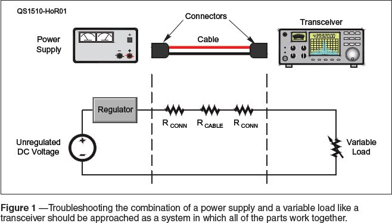
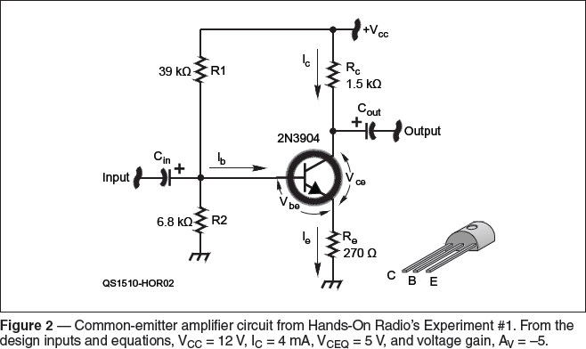

Experiment #153 — Learn by Fixing
The late, great Jim Williams, well known for his writing and design skills (he was a senior technical resource at Linear Technology, among other companies), was largely self-taught, like many “Hands-On Radio” readers. One method of learning that he promoted over and over again was to repair equipment. In the chapter “The Importance of Fixing” in The Art and Science of Analog Circuit Design, Jim wrote, “…fixing things is excellent exercise for doing design work. A sort of bicycle with training wheels that prevents you from getting into too much trouble.”1 Jim’s point is that the equipment worked at one time but then something changed. Your job is to find that something, which is easier than getting a design to work from scratch.
Along the way to fixing the equipment, you have to actually figure out how the circuit was supposed to work, maybe even drawing up a schematic if you don’t have one. Unlike troubleshooting something you just built or designed, you can be pretty sure the design worked. To fix the circuit or equipment, you have to understand that design and look for ways in which the broken equipment deviates from how the design was intended to work. A late-night fix-it or build-it session is some of the best schooling you can get! Also from Jim, “…3:00 A.M., Tek. 547 [an oscilloscope], pizza, breadboard. That’s Education.”
The Fixing State of Mind
This won’t be a step-by-step process because troubleshooting and repair is too complex and varied to follow a fixed procedure. If there is a common element to all fixing, though, it is to have an open mind, avoid assumptions, and remember that nature bats last. After you have a lot of experience, you will develop an intuition about certain types of problems, but when you are learning the ways and means of repair, resist the urge to jump around in the equipment thinking, “It must be…!” It usually isn’t and you’ll get frustrated. Slow down, keep notes, and ask “Why?” a lot.
The other key state of mind is to approach problems from a system standpoint: antenna system, power system, RF signal system, etc. Very few items in our shack are truly independent of other devices and wiring. Look at all the interconnected pieces and remember them as you contemplate what can be causing the problem. The system approach was introduced in Experiment #148, “Proof of Performance.”2 We’ll take a look at troubleshooting from the power perspective to reinforce the idea.
If Power Ain’t Happy…
Then ain’t nobody happy! Any time I start working on a repair, the very first thing I check (and often recheck) is that the power source and all connections to it are in good working order. Remember, think about the system, as in Figure 1. All of the elements in that system work together and create symptoms together.

A common linear power supply’s output voltage can look fine at a light load (even if it has bad pass transistors) yet be wildly out of regulation at higher currents. Test the supply under load to be sure it’s okay. It’s always a good idea to check for unwanted ac on a power supply output, as well. An output voltage that looks “close” but wanders or varies might be due to an oscillating or “motorboating” regulator. Oscilloscopes may seem like overkill for testing a power supply but they show you things that meters can’t.
If the power supply is okay, test the power all the way to the electronics that use it. That system includes the connecting cable, the panel connectors, and internal wiring. A common “gotcha” is using a different (good) power cable during testing and being unable to reproduce the problem. If possible, keep the system together when troubleshooting. Note any changes and check those items later. For example, you might not be able to remove power wiring from a vehicle but be aware that you have changed the system and test the vehicle power wiring separately.
Most “12 volt” radios start misbehaving at a power supply voltage of 12 V and lower. The typical radio might draw peak currents of around 20 A. How much series resistance (RCONN + RCABLE + RCONN in Figure 1) does it take to drop 13.8 V to 12 V?
RSERIES = (13.8 – 12) / 20 = 0.09 Ω
That’s not a lot of resistance and a good reason to be sure connectors, particularly crimp-on terminals, are secure and clean. A radio may draw enough current through a bad connector to misbehave on SSB peaks, which can act like RF feedback or excessive drive, even though it performs just fine in receive and at low power levels.
It’s not uncommon for power connectors on radios and other equipment to get loose, dirty, or overheated. Remember that caution about assumptions! Trace the power all the way through the input connector into the internal circuitry under load.3
DC Operating Point
Let’s say you are happy with the power supply and all of the connections. Everything looks good for power throughout your system — it’s time to open up the equipment and go to work. After you’ve familiarized yourself with the system inside the box, break the system down into modules or sub-assemblies and start trying to understand what they do. Further, you might also get to the point where you suspect a particular circuit is not working properly. Maybe it has no output or distorted output.
For an analog circuit, the next step is to verify the dc operating point. Take a look at Figure 2, the schematic of a simple common-emitter (CE) amplifier, subject of the very first “Hands-On Radio” column more than a dozen years ago. You might think that discrete component transistor circuits are out of vogue, but they are extremely inexpensive (the circuit shown probably costs less than 50 cents in production volumes) and are still common. Even without having a theory of operation, what can you tell just from taking some dc measurements?

The first thing to check in this circuit is VCC to be sure it’s the “right” voltage. Assuming VCC is good, take a voltage measurement at each pin of the transistor and calculate VBE and VCE or measure them directly pin-to-pin. (Review the original experiment if you’re not familiar with the CE circuit.) In this amplifier circuit, VBE should be around 0.7 V or the transistor is not being biased correctly for some reason. VCE should be somewhere between 0.1 – 0.2 V (saturation) and VCC (cutoff). If those Q-point or quiescent point voltages aren’t right, that amplifier won’t operate properly.
Carry the same “simple tests” mentality to digital circuits. Are the power voltages right? Are all inputs and outputs at the right voltages for HIGH and LOW states? Are there pulse and data signals where they are supposed to be? Check the very basic stuff first, like the ENABLE and RESET pins. Slow and methodical, you’ll eventually find one clue and then another.
Practice, Practice, Practice
Try this with a friend: wire up a circuit on a breadboard and get it working. Then change something — a resistor value, power supply voltage, substitute a known bad component, even miswire or disconnect a component. Then ask your friend to find the problem with simple measurements. Start with something that works and then change one little thing. Once you’ve gotten the hang of it, move up to simple accessories and gadgets.
When trying to fix real-world circuits, you also have a powerful tool that will never touch the physical circuit but which can provide valuable insights — the circuit simulator. Recreate the circuit in a simulator like LTSpice (see Experiments #83 – 86) and have it compute a dc operating point for you at every point in the circuit. You can then look for significant discrepancies between the simulation voltages and what your meter tells you.
The SDT
No discussion of troubleshooting would be complete without mentioning the “SDT” (aka – Some [Darned] Thing). Sherlock Holmes is quoted as saying, “When you have eliminated the impossible, whatever remains, however improbable, must be the truth.” Remember that nearly all of our equipment operates as part of a system, sometimes a very complex system. As such, it’s quite common for an unexpected problem to cause vexing and inscrutable symptoms elsewhere, such as a rotary switch contact that has slipped out of alignment or a control signal set improperly or a loose connector shell or anything, really. The SDT often appears right after you think, “Gee, that’s funny…”
One last quote from Jim: “Fast judgments, glitzy explanations, and specious arguments cannot be costumed as ‘creative’ activity or true understanding of the problem. After each ego-inspired lunge or jumped conclusion, you confront the uncompromising reality that the [darn] thing still doesn’t work…When it’s finally over, and the box works, and you know why, then the real work begins. You get to try and fix you.”
References
1J. Williams, The Art and Science of Analog CIrcuit Design, Butterworth-Heinemann, 1995.
2All previous Hands-On Radio experiments are available to ARRL members at www.arrl.org/hands-on-radio.
3M. Zonnefeld, WØLTL, “Mobile HF Power RFI,” Hints & Kinks, QST, Oct 2015, p 64.